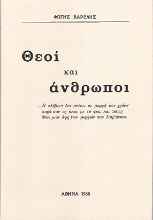

Χορός
Δεν ξέρω πώς θα λειτουργούσε ο νούς
Αν δεν υπήρχαν οι λέξεις
Που η μια με την άλλη ταιριάζοντας
Χτίζουν τον λόγο και δίνουν την συνομιλία στον άνθρωπο.
Ξέρω όμως και μπορώ να πω
Ότι ο πόνος πούν’ αληθινός δεν βρίσκει λόγια να ειπωθεί.
Κι αν βρει δεν ελιναι για τ’ αυτιά των άλλων.
Γιατί καθώς ο άνθρωπος συνήθισε να παραβγαίνει παντού
Ούτε στον πόνο θα σταματήσει.
Κι αυτόν, που, απ’ ό,τι είδε κι έπαθε, έχει μάθει να σιωπά
Και να μοιράζεται τον ξένο πόνο με τον δικό του
Αυτόν νομίζω εγώ άνθρωπο σωστό μες στους ανθρώπους.
Σλομπόζια, Αύγουστος 1942
Και Ρόδος Αύγουστος 1988
Φώτης Βαρέλης